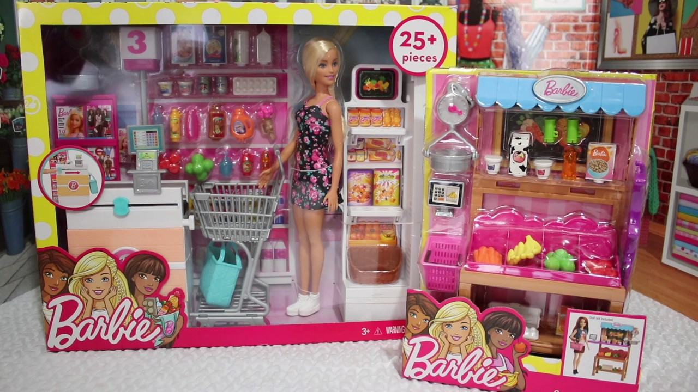

Barbie Doll’s 1973 Fashion Runway
by Barbie Doll’s 1973 Fashion Runway
Last Updated - 5 Days Ago

The Year Was 1973
Gamble was on the growth in 1973 but didn’t prevent Barbie Doll from receiving a new closet filled with clothing and accessories -- she received 33 new Best Buy Films, accessory cards, Sew Magic and Buy Ups ‘N Move styles that year. Mattel recorded ensembles and outfits only by quantity -- and also clothes didn't have tags. The packaging has been scaled but not the clothing -- midi maxi along with also the “rdquo & peasant.
Mattel also introduced Quick Curl Barbie, whose hair may be styled using a comb or brush. Francie, Skipper, Kelly and Miss America Barbie were additionally given Rapid Curl hair. Malibu Christie (together with her red buttocks and white beach towel) hit the shelves in 1973. Live Action Barbie and P.J., inside their (previously published ) first outfits, were marketed in what collectors phone “baggies;” clear vinyl bags with printed newspaper shirts that may hang out of display-wall pegs.
1973 Barbie Doll Fashions
(#3203, 1973); puffy, long-sleeved, white (with black dots) blouse which has been cropped in the waist -- it had a black and white checked bow in the neck. Vest and the skirt were crimson with white polka dots. Red “rdquo, pilgrim & shoes came with the ensemble. (#3205, 1973); long-sleeved white blouse with little leg-of-mutton shoulders and white eyelet lace arms -- it was large collar and thick yellow ribbon sash round the waist. The shirt was worn during a lengthy light-yellow and whitened gingham-patterned skirt (using a top heeled hem). The look was finished by white pumps.
(#3206, 1973); the dress had a bright-green knit halter shell stitched onto a “bubble” published maxi skirt in shades of orange, crimson, purple, green and blue. The skirt cloth was exactly the same employed in 1971’therefore Bubbles and Boots. A plastic sky-blue belt circled the waist. The dress came with a fitting “bubble” patterned floppy hat (bright-green ties). Green sneakers were from the bundle.
(#3208, 1973); two-piece orange twill pantsuit -- the wide-legged pants paired the long-sleeved coat. A halter shirt in blue, orange, indigo and off-white was stitched on the trousers. A belt attached at the waist. Matching purple "pilgrim" closed-toe shoes finished off the look.
(#3343, 1973); peasant dress with two separate floral prints to the bodice and skirt. The shirt -- patterned with red flowers -- showcased flower corsage, a red sash and sleeves. The underwear has been stitched onto a skirt with white, yellow and red blossoms. Hem; s ruffled. Barbie wore red shoes with the dress.
(#3346, 1973); two-piece ensemble in red, blue and white. The shirt with white polka dots and “rdquo & sailboats; had long sailor collar sleeves and a broad square-backed & ldquo; ” with piping. The shirt was matched by the skirt. Red shoes completed the outfit. (#3347, 1973); lace mini-dress using a floral print which featured hot colours of yellow, blue, red, green, purple, pink, white and orange. Collar and the cuffs were whitened and a plastic belt was sported by the apparel. White pumps and white tricot socks finished the set.
(#3348, 1973); bright-yellow “infant doll” tricot nightgown with nylon netting. It had been trimmed in hem and the breast region. The fitting robe (yellow-netted nylon) had a broad white lace collar and yellow satin ribbon ties (that matched the straps of this nightgown).
(#8620, 1973); this dress had just two bits sewn into a single -- its own white short-sleeved blouse had a lace-ruffled collar and one red button in the neckline. The attached floral dress had “straps” above the blouse. The skirt (colored flowers in red, blue, pink, chartreuse and white on a yellow background) needed a broad ruffled hem. The ensemble was completed by red shoes.
(#8621, 1973); skirt and shirt at a light-blue gingham pattern -- that the skirt had a ruffled hem with dotted blossoms printed on the crisscross design. The long-sleeved peasant-styled blouse -- with dotted flower print -- had white eyelet trimming in the collar down and the lapel. White shoes arrived in the bundle.
(#8622, 1973); a brightly coloured evening outfit -- this ensemble consisted of hot-pink tricot trousers under an absolute orange nylon skirt (using a sizable ruffled hem). Pants and the skirt were attached to some tricot halter top. Barbie wore a sheer white blouse on the halter; it had a blossom (orange and cerise) attached to its lapel. The outfit comprised a silver clutch bag and crimson “chunky” sneakers.
(#8623, 1973); Barbie is getting married (again)! This time, she picked a white A-lined dress covered with patterned nylon. The apparel ’ absolute sleeves matched with the broad and yoke hem. The bodice, trimmed in braid, had a ribbon round the neck -- it paired the ribbon. The wedding outfit came with an easy white tulle veil, bouquet with one white blossom and green tulle (using a white lace ribbon) and white pumps.
(#8626, 1973); shoe card with eight different pairs -- squared-toe pumps in yellow, white, beige, red, turquoise, light-pink and black. A set of light-brown knee-high “laced” boots ended off the group.
(#8680, 1973); halter top maxi dress with ties in the midriff segment and waist. The dress came from a variety of designs, such as; floral, stripes, zigzags, crisscross, dots and swirls. The colours were brilliant; pinks, yellows, oranges, purples, greens, blues and white. The substances were largely left over from prior outfits.
(#8681 & #8682, 1973); this golden-tanned fleece skirt with its centre pleat was worn out with a tan and red knit high-neck sweater. Red squared-toe shoes arrived in the bundle. Sold individually was the tan coat with its broad “fur” collar. The jacket had a large pocket at front and tie belt round the waist. A set of brown squared-toe shoes came together with all the jacket.
(#8683, 1973); long-sleeved bright-yellow wrap blouse that tied around the middle section. It fit right into a lengthy tricot skirt of orange, pink, yellow, white and green with a floral and triangle pattern. Chunky yellowish shoes finished the look.
(#8684, 1973); an ecru-colored muslin peasant dress with short puffed sleeves which finished with a broad, loose boom. The waistband sported an ecru grosgrain ribbon using one red flower. The maxi-length skirt had a top ruffled hem. Off-white sneakers followed the dress.
(#8685, 1973); Mattel made several variations of the pantsuit (yellowish stripes with different patterned trousers ). It turned out to be a one-piece jumpsuit -- that the trousers were black or navy blue with various prints (blossoms & turtles in a variety of colours per slice; white, red, orange or pink ). The trousers were stitched onto a long-sleeved white tricot blouse with a high neckline. A yellow sweater vest -- it had been open beneath the sleeves into the trousers -- dropped over the underwear. Yellow squared-toe shoes finished off the ensemble.
(#8687, 1973); two-piece pantsuit in pale-pink felt the trousers flared the legs down. The backless pink tricot blouse slipped through Barbie’s arms and may be noticed if she wore the coat open. The coat, that attached at the waist, had a broad “fur” collar and patch pockets. Shoes completed the outfit.
(#8688, 1973); this outfit featured a pink halter-top which has been sewn to an A-line ankle-length skirt. In the waist, the dress was coated with black tulle (adorned with black stripes dots along with a ruffled hem). The tulle skirt attached around Barbie's waist with a dark velvet ribbon -- that the ribbon held a white blossom. Barbie Doll wore a fitting black tulle shawl. The apparel was offered with shoes that were pink.
(#8689, 1973); two-piece ensemble -- that the white tricot blouse had long, sheer sleeves with lace trimming in the cuffs. The lace maxi skirt, that came in a variety of colours (some in pink, turquoise, yellow, orange and red ), had a top ruffle at the bottom hem. The skirt was emphasized with two flowers and a bow. White cut-out shoes have been contained in the bundle.
(#8690, 1973); it’s bedtime! This two-piece sleep outfit featured a lengthy nightgown -- it had been created with white tricot fabric along with a sheer white overlay (in the waist ). The ribbon-strapped bodice was pink with a bow (and extended ribbons) in the waist. The robe was white with green and pink floral print. The robe had absolute nylon ruffles at the cuffs and material round the throat. (#8691, 1973); assortment outfit -- Barbie had her selection of the red knee-length skirt (with little white dots) or the trousers (same pattern). A sleeveless white blouse (adorned with a large red flower on one lapel and rickrack trim front) fit into (and above ) the skirt or trousers -- a red plastic buckle circled the waist. The ensemble arrived with an open-crown round nylon coat (its red and white trim paired the trousers and skirt). The look was finished off by red shoes.
(#8692, 1973); aqua-blue lace dress with a sleeveless bodice and a (aqua) lace yoke beneath the large neckline. A lace ribbon wrapped round the throat. The apparel ’ large waist sported a comparable ribbon (sash) and 2 blossoms. The dress came with shoes.
Sew Magic Fashions and Accessories
Two Sew Magic collections were introduced by mattel. The Sew Magic Barbie Doll Fashion Place (#8670, 1973-1975) comprised the designs and materials for four outfits; a , two blouses, two pajamas, pajamas and a handbag. Fabrics, threads, fasteners, a doll-clothing mannequin, sewing accessories plus also a “girl-sized” sewing machine gave kids the chance to earn their own Barbie Doll styles. The Sew Magic Add-Ons kit (#7726, 1973-1974) comprised “make-your-owns” to get both Barbie and Ken. It had the substances such as Ken Doll’therefore swim suits, trousers, sleeveless and short-sleeved tops, shorts and a vest. Barbie needed a poncho, long dress, slacks, evening dress, shorts and a shirt. The kit came with accessories and notions.
Get-Ups ‘N Move
Mattel introduced several Get-Ups ‘N Move ensembles in 1973, including Barbie clothing with more accessories. (Number 7700, 1973-1974); the initial “Doctor Barbie” ensemble: blue surgical apparel; mind covering; white and mask physician ’s jacket. Accessories included lanky graph; stethoscope; a degree; phone towel and sneakers.
(#7701, 1973-1974); Barbie Doll’s newest ballet set -- a long-sleeved black leotard; black tights; white lace ballet dress with a brief tutu (that the tutu was made from gold emphasized tulle along with the apparel ' bodice was trimmed with gold and white “string ” braid); pink ballet slippers; pink lace toe-shoe tote; golden foil tiara; firm statement and two silk roses. Skipper Doll needed a comparable group.
(#7702, 1973-1974); camping outfit and accessories -- that the bundle comprised blue jeans and a fitting backpack; white and red plaid fleece shirt; reddish shell; red tennis shoes; green calico sleeping bag (with crimson flannel interior ). This outfit coordinated with Skipper’s (#7715) and Ken Doll’s (#7706) Get-Ups ‘N Move camping ensembles.
(#7703, 1973-1975); Barbie Doll took to the heavens (again) in this airline clothes group -- it consisted of many bits: crimson cotton skirt; navy-blue trousers; navy-blue vest; red top with extended horizontally-striped sleeves (blue, red and green ); long-sleeved body blouse (white, printed with red, blue and green polka dots); navy-blue plastic belt and blue squared-toe shoes. Ken Doll needed a coordinating ensemble (#7707).
1974 and Barbie in Sweet 16!
Barbie turned Sweet 16 years old in 1974 therefore Mattel celebrated the milestone with a unique promotional “birthday gift ” … a brand new doll! Several upgraded versions of Barbie along with her buddies were published in 1974, in addition to numerous new outfits and a few which were replicated from 1973’s Fashion Runway.
Leave a Comment:
Search
Advertisement